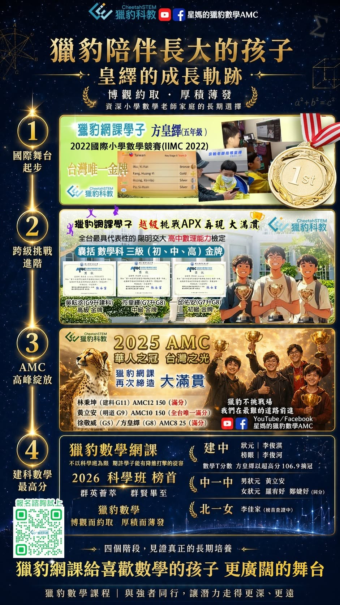

獵豹網課陪伴長大的孩子～博觀約取 厚積薄發
皇繹爸爸是一位資深的小學數學老師，憑藉深厚的教育專業與長遠的眼光，他一路支持皇繹長期在獵豹深造。這次，他以數學老師的專業視角，也以父親的溫暖關懷，分享皇繹長期在獵豹學習過程中的點滴成長與心路歷程。
👍獵豹網課諮詢試上：
2. 加入獵豹客服官方Line： ID：@492bjsgw，或者掃描QR code(見底下留言)
✅皇繹參與的獵豹課程：
（參與獵豹網課：FA系列, 高中數學S, AMC10, AIME, 高中輕競賽FS01, 微積分FUC）
✅ 四年級豫博(皇繹弟弟) 參與的獵豹課程：
（參與獵豹網課：PK1A~PK2B, GGB）
皇繹爸爸分享：
猶記得2020年底獵豹網課初創時期，和星媽每天盯著FB社團人數，看它100、200緩緩的上升，心中卻深怕網課支撐不下去，枉費了星媽和老師們的一番苦心。時至今日，獵豹已成國內數學網課翹楚，其口碑和學子們的優秀表現已是有目共睹。
皇繹從2020年獵豹開第一門課開始，幾年之內，不論是AMC系列、AIME、FS01、FA系列、S系列、GGB系列、FUC微積分…，只要有開課就參加，說他是獵豹帶大的孩子一點都不誇張。對他來說，獵豹就是他的生活之一，老師們提出的問題及作業總讓他樂在其中(即使沒解出來)。同時透過APX、APMO初選、AP的Calculus BC等具公信力的檢測，可以看出獵豹的教學是經得起考驗的。今年的建中科學班初試，皇繹的數學原始T分數突破了100，而在166.1的錄取標準之下，他的數學初複試經加權計分後就得了將近100分，這一切都歸功於獵豹足夠的教學強度極大化的發揮了成效。(遺憾的是上到這兩年已沒課可上，還問老師們能否開線性代數。)
而看到獵豹榜單上，學長姐們在IMO、EGMO、IJSO…一再得牌的驚人表現，有的家長會認為獵豹只做資優數學，孩子本身要數學非常優秀，才適合來讀獵豹數學。在初創期，我個人會認同這樣的想法，因為從2020年12月第一門課「獵豹AMC10」，到2021年2月第二門課「獵豹AMC10深水區賦格」，就可以看出主要的教學對象是想在AMC10、12獲得高分的孩子。但隨著老師們的努力及的家長們的支持，獵豹持續拓展目標群以嘉惠更多孩子，目前已建構一套由國小中年級到高中的系列課程。孩子本身優不優秀，不再是做為是否選擇獵豹的主要考量。如果您的孩子喜歡數學，當然可以到獵豹來試一試；如果您的孩子不喜歡數學，也可能適合獵豹課程。為什麼這樣說呢?個人任教三十餘年，有小部分會缺交作業、字跡潦草、上課不專心或會有些天馬行空想法的孩子，或許不是故意搗亂，而是課程對孩子來說太簡單，他身邊能接觸到的數學，不是習作、評量，就是測驗卷，那些對他來說思考性不強的題目。讓他沒有學習的動力。家長也以為這些就是數學的全部，沒有去體會過，課內的數學只是一小部分而已。試想，如果要你我每天算一堆五位數的加減、四位數的乘除…是不是會完全提不起興趣，覺得為什麼要做這些? 如果是這類孩子，獵豹就是最適合他的地方，他可以進入到另一個廣闊的數學世界，再次激起他的學習動機。
或許也有家長認為，讀獵豹都要有超修的程度。其實是不需要的。我自己的小兒子就是一個完全沒有超修的孩子，三年級起跟著獵豹的PK系列課程，按時上課、按時複習、按時完成作業和小考，雖然在作業和小考中表現平常，也在去年底的九章IMAS獲得了中年級組不錯的成績。
獵豹網課的教師群在競賽及高中數學課程的深厚涵養與教學功力，我在2021年的文章中已詳加介紹其令人推崇之處，於此不再贅述。而在獵豹的國小PK課程中，楊譯老師不但很用心的規劃課程內容，上課時會隨時關注孩子的學習進度能否跟上，也會針對較需思考的地方，請小朋友們發言，不但訓練小朋友們勇敢說出自己的想法，也能參考其他同學的解題策略，頗具教學成效。而隔週的習題課，除了作業和小考的難題講解外，習題課筱君老師還很細心的補充了更多的題目及一題多解的思路，透過這樣幾個階段的鍛鍊，把重要的觀念深植進孩子的長期記憶中並做有效的運用，同樣讓孩子們獲益良多。
家中兩個孩子參與獵豹課程五年多來，身為家長，心中充滿的是對教師群的感謝，他們對孩子的引導與鼓勵，是孩子能持續進步最重要的推手，讓他們能勇於挑戰更深的難題，提升自己面對各種新題型的應變能力。而心中最想做的，就是把這樣優秀的課程盡力的告訴每一位家長，讓所有孩子們都能從獵豹網課體會到數學的快樂，和許多厲害的同好，課堂上一起切磋琢磨，在老師們的帶領下大家共學共好，一起展翅飛得更高更遠。
